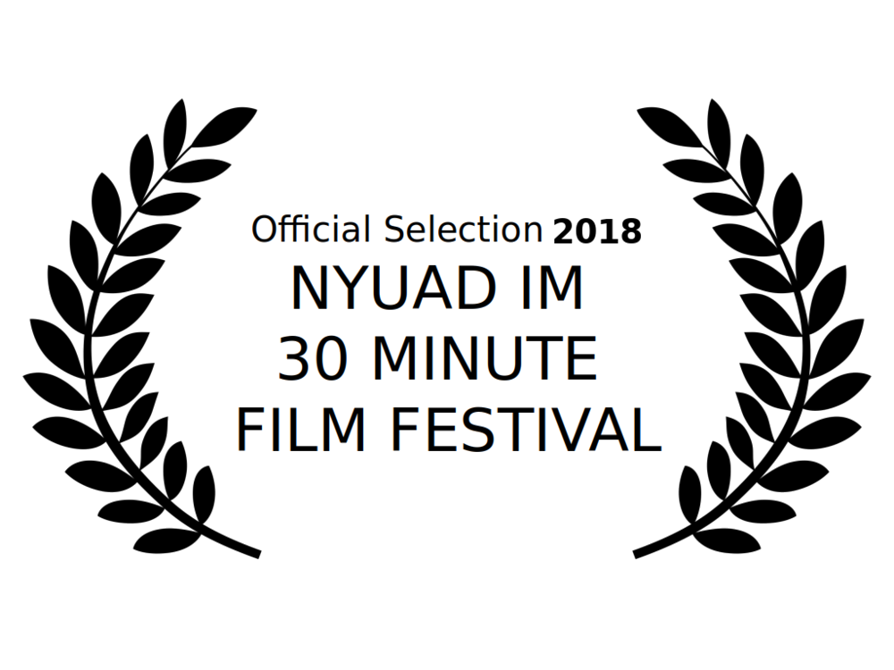

The Thirty Minute Film Festival, or 30MFF for short, showcases a series of films produced in a little under an hour, with thirty minutes for shooting and thirty for editing (hence the name). The 30MFF was a colaborative effort between students, where spontaneous creativity was tested to the maximum, and true talent was showcased front and center. Thank you for visiting.
